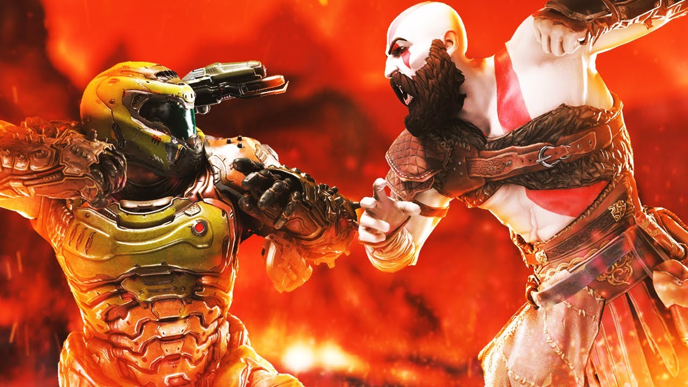

Doom Slayer is a merciless fighter but compared to most others he is probably one of the weakest... He can beat the humans and the goose but the other characters are just out of his league. Even his competitor Kratos has killed far greater deities like the greek and norse pantheon.
